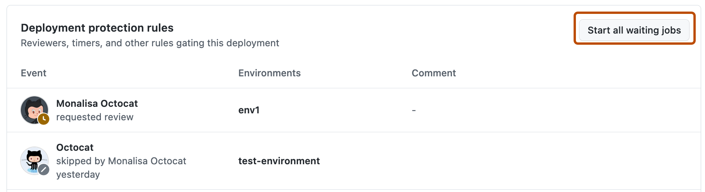

Navigate to the workflow run that requires review. For more information about navigating to a workflow run, see Viewing workflow run history.
If the run requires review, you will see a notification for the review request. On the notification, click Review deployments.
Select the job environment(s) to approve or reject. Optionally, leave a comment.
Approve or reject:
To approve the job, click Approve and deploy. Once a job is approved (and any other deployment protection rules have passed), the job will proceed. At this point, the job can access any secrets stored in the environment.
To reject the job, click Reject. If a job is rejected, the workflow will fail.
Note
If the targeted environment is configured to prevent self-approvals for deployments, you will not be able to approve a deployment from a workflow run you initiated. For more information, see Managing environments for deployment.
Bypassing deployment protection rules
If you have configured deployment protection rules that control whether software can be deployed to an environment, you can bypass these rules and force all pending jobs referencing the environment to proceed.
Note
You cannot bypass deployment protection rules if the environment has been configured to prevent admins from bypassing configured protection rules. For more information, see Managing environments for deployment.
You can only bypass deployment protection rules during workflow execution when a job referencing the environment is in a "Pending" state.
Navigate to the workflow run. For more information about navigating to a workflow run, see Viewing workflow run history.
To the right of Deployment protection rules, click Start all waiting jobs.

In the pop-up window, select the environments for which you want to bypass deployment protection rules.
Under Leave a comment, enter a description for bypassing the deployment protection rules.
Click I understand the consequences, start deploying.